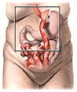

| Gastric bypass surgery uses both restriction and malabsorption to achieve weight loss. They are the most common types of weight loss surgery performed. The most frequently performed type of gastric bypass is called the Roux-en Y gastric bypass. In Roux-en-Y gastric bypass, staples are used to permanently close off part of the stomach. This leaves only a small stomach pouch for the food you eat. Additionally, a Y-shaped piece derived from an upper portion of the small intestine is then attached to this small stomach pouch. As a result, food from your stomach pouch bypasses the initial sections of the intestine, which normally would absorb calories and nutrients after eating. Gastric bypass surgery can be performed using a traditional open technique or through laparoscopic surgery, depending on your circumstances and the decision of your surgeon. Restrictive procedures result in a smaller stomach pouch. Normally, the stomach can hold 3 pints (6 cups) of food. A surgically modified, smaller stomach pouch holds only 1 cup or less, so you must eat considerably smaller portions. Also, because of surgical alterations made to the connection between the stomach and the intestine, food passes much more slowly from the stomach into the intestine. This allows you to feel full much longer after eating. Malabsorptive procedures alter the pattern of flow from your stomach to your intestine, decreasing the number of calories absorbed by the intestine.
Laparoscopic surgery uses smaller incisions and a small video camera that projects views of your stomach and intestine onto a monitor in the operating room. Both methods are routinely performed. Laparoscopic surgery may afford benefits for patients, including faster recovery, fewer complications, less pain and reduced scarring. |
|||||||||||||||||||||||||||||||||||||||||||||||||||||||||||||||||||||||
|